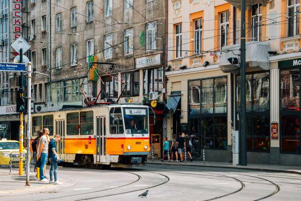

Traveling within Bulgaria is relatively easy because of its well developed transportation network. Visitors can move between cities and tourist destinations using buses, trains, rental cars, and domestic flights.
The bus system is one of the most commonly used forms of transportation in the country. Buses connect most cities and towns and are often an affordable way for travelers to explore different regions. Train travel is also available and offers scenic routes through the countryside and mountains.
In major cities such as Sofia, public transportation systems include buses, trams, and metro trains. The Sofia Metro is a modern subway system that allows residents and tourists to travel quickly across the city.
International visitors usually arrive in Bulgaria through Sofia International Airport, which serves as the country’s main gateway. Other airports in cities like Varna and Burgas also provide access to the Black Sea coast and nearby tourist destinations.